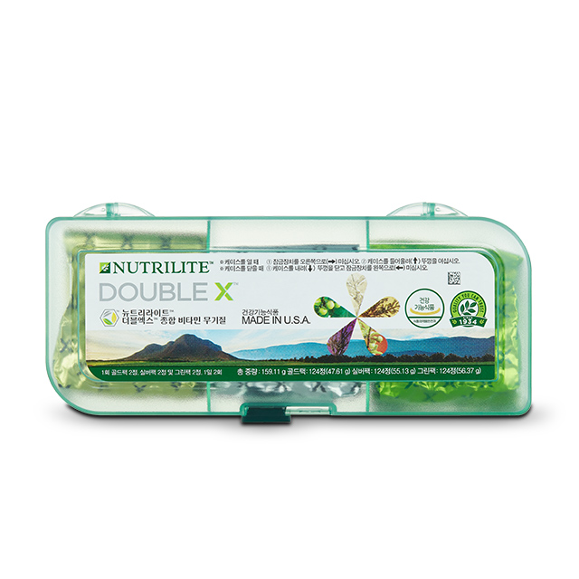
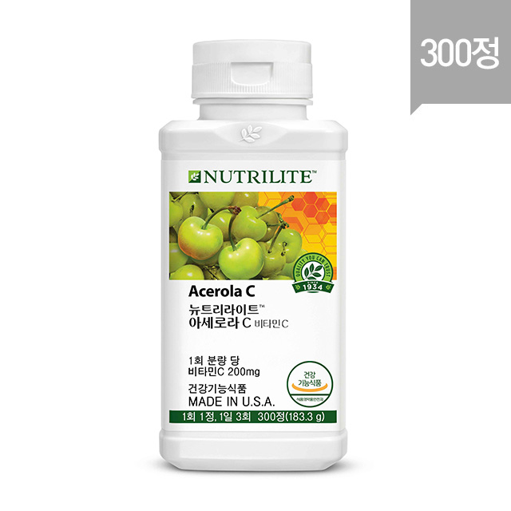

더블엑스는 한국인 맞춤 포뮬러로,
14가지 비타민과 10가지 미네랄, 부원료로 20여가지 식물원료에서 전달하는 19가지 식물영양소를 함유하고 있습니다.
더블엑스는 균형있는 영양으로 불완전한 식단과 불규칙한 식습관을 가지고 있는 현대인의 건강 밸런스를 지켜 줍니다.
88년 식물영양소 과학 뉴트리라이트의 대표 제품 더블엑스로 온 가족 건강을 지키세요.

뉴트리라이트 아세로라 C 비타민은 비타민 C와 함께 아세로라농축물혼합물, 부원료로 굴껍질분말혼합물 등을 함유한 비타민 C 보충용 제품입니다.
비타민 C는 수용성 비타민의 하나로 항산화 작용을 통해 유해산소로부터 세포를 보호하여 우리 몸을 지켜줍니다.